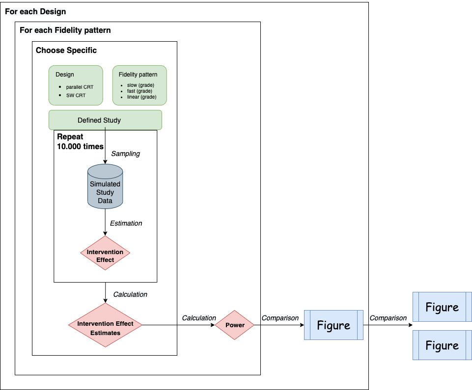
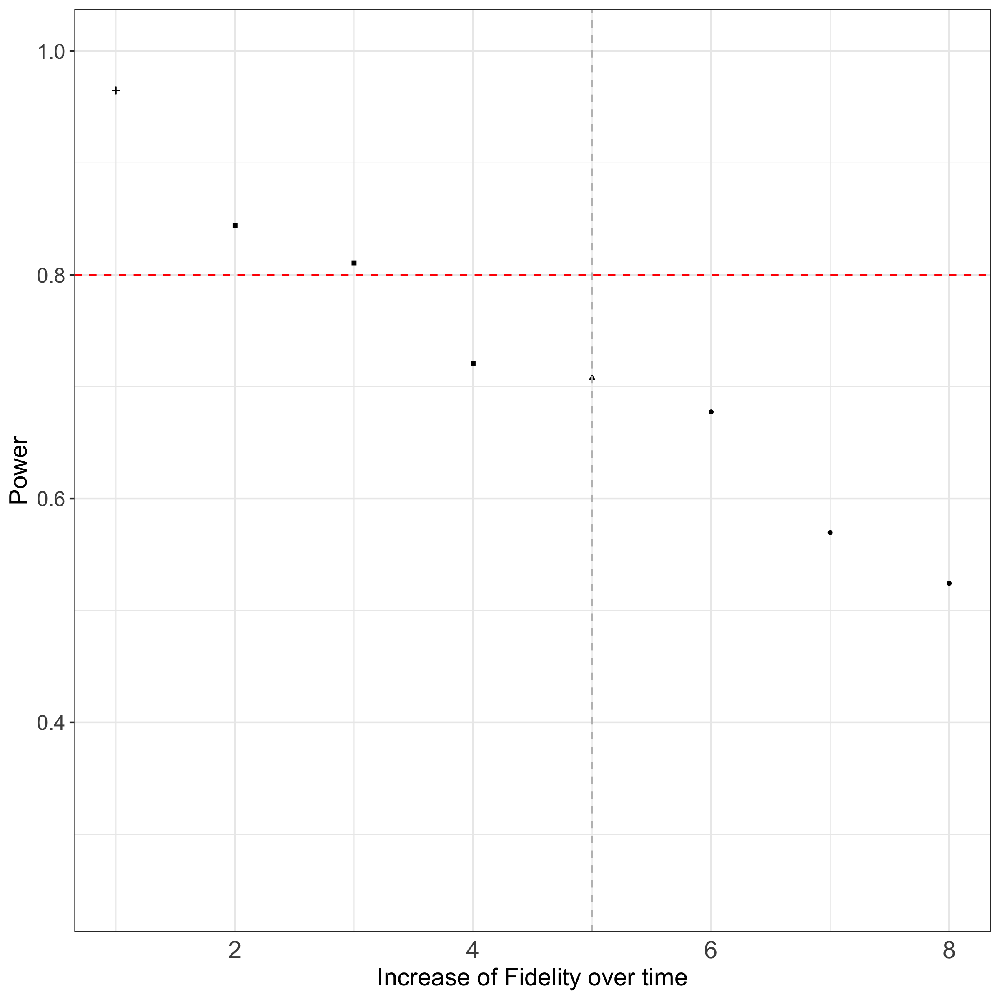

# load necessary packages
library(fidelitysim)
library(samplingDataCRT)
#library(ggplot2)2 Step-by-step simulation

In the following the tutorial is separated in two parts, showing the use for:
- Simulation experiment for one setting by choosing between
- Parallel or Stepped wedge designs
- Perfect versus Implementation error situations
- Parallel or Stepped wedge designs
- Simulation experiments to comparison of several Fidelity patterns
2.1 Simulation experiment for one setting
According the [Workflow diagramme of the simulation] corresponds to inner box, here we show how to evaluate the performance of a cluster randomized trial with one specific setting of study design and probably existing specific implementation error (fidelity pattern).
Within each simulation experiment steps of data sampling and effect estimation, provided by function within the R-package {samplingDataCRT}, were repeated. For explanation see [Detailed statistical information]. After repeating the steps of the simulation the obtained effect estimates can be evaluated for the performance of the model. The provided function performanceMeas() of the R-package {fidelitysim} calculates the following performance measures of a simulation:
Bias: mean deviation of the estimates from the true value of the parameter of interest (intervention effect) is an indicator of accuracy
Coverage: measurement used to control the Type I error rate for testing the null hypothesis (H0) of no effect
Power: proportion of simulation samples in which the H0 of no effect is rejected at a significance level of \(\alpha\) when H0 is false (is related to the empirical Type II error rate).
To simplify the process of the whole simulation experiment the R-function simulation() is provided within the R-package {fidelitysim}. The function includes the steps: data sampling for a specific design and existing implementation error, effect estimation, performance measures calculation. Hence, the input of the function is the specification parameter:
- number of repeats for the simulation
- chosen design (including study design, number of cluster, time points and individuals per cluster)
- model parameters (effect, variances, …)
- two design matrices which indicates whether deviation from perfect situations are assumed or not
and the output are:
- effect estimates
- performance measures
The usage is shown here for a parallel design trail, where the difference of the method application regarding the parameter setting for other design is explained. Be sure necessary packages are loaded:
One setting includes the specification of :
- Study design
- Indication if there are deviations from perfect situations or not
- Model parameter
- Iterations of the simulation
and finally,
- the Simulation experiment can be performed.
2.1.1 Study design
Based on the study setup, the following parameters for the study design need to be defined:
- No. of clusters (e.g hospitals)
- No. of individuals per cluster (and time point) as the cluster size
- No. of time points the cluster were followed
- Design type controls if individuals will be fowllowed over time (cross-sectional or longitudinal): cross-sectional type, which indicates trials where individuals within the cluster can change over time points
A design matrix according the study design has to be determined by the function designMatrix(). Here, two arguments are specific for the different types of studies. If the design argument is set ‘parallel’, then the parameter nSW indicates here the number of clusters are being control group. If choosing design = "SWD" (which is also set by default), the he parameter nSW indicates here the number of cluster switches per time point from control to intervention group.
Then we determine the corresponding design matrix for a parallel cluster randomized study with:
- 6 cluster with a
- cluster size of 10 measured at
- 7 time points, where
- 3 clusters in each, the control as well as in the intervention group, are included
as follows:
## Design matrix ##
I <- 6 # number of clusters
J <- 10 # number of individuals per cluster (used later in simulation-step)
K <- 7 # number of time points
Sw <- 1 # number of cluster switches per time point can be manually set
# design matrix for parallel design
(designMat_prll <- designMatrix(nC = I, nT = K, nSw = round(I / 2), design = "parallel")) [,1] [,2] [,3] [,4] [,5] [,6] [,7]
[1,] 0 0 0 0 0 0 0
[2,] 0 0 0 0 0 0 0
[3,] 0 0 0 0 0 0 0
[4,] 1 1 1 1 1 1 1
[5,] 1 1 1 1 1 1 1
[6,] 1 1 1 1 1 1 12.1.2 Indication if there are deviations from perfect situations or not
Further, in the function for the simulation by specifying a second design matrix X.A, we can indicate if there are deviations from the perfect situation present or not. Since we simulation perfect situation with no deviation, both arguments for the design matrices X and X.A are the same within the latter used R-function simulation() (see Simulation experiment). If deviations from perfect situation should be simulated, a second design matrix to which indicates the pattern of fidelity according to this study design has to be provided as well.
To consider the deviation from perfect implementation of an intervention (100% fidelity) we add fractional values to estimate the degree of the deviation and its effect on the study effects. Therefor 3 functions in within the R-package {fidelitysim} can be used to specify several fidelity patterns. For explanation of all kind of fidelity patters see [Determine different fidelity patterns]. The conducted fidelity patterns can then be pushed to the design matrix with the R-package {samplingDataCRT}, see for more explanation [Fidelity patterns].
Using the same parallel design trial example and assume a linear increase of fidelity from 40% to 80% from time point 1 to the end of trial (time point K) 3 arguments are specified:
### Fidelity parameters ###
# Fidelity at the begin
Fid.T1 <- 0.4
# Fidelity at the end
Fid.End <- 0.8
# slope for linear function
m <- (Fid.T1 - Fid.End) / (1 - (K - 1))# model linear increase
res.lin <- find.Fidelity.linear(time.points = K, Fid.End, Fid.T1)Which is then supplied to create a design matrix that reflects the deviation from perfect implementation by fractional values for each time point and cluster (find the other two functions for slow and fast increase here [Determine different fidelity patterns]):
# design matrix of a linear fidelity pattern
(fidelMat_prll <- implemMatrix.parallel(
nC = I, nT = K, nSw = round(I / 2),
pattern = res.lin[, "Fidelity.Prozent"] / 100
)) [,1] [,2] [,3] [,4] [,5] [,6] [,7]
[1,] 0.0 0.00 0.00 0.0 0.00 0.00 0.0
[2,] 0.0 0.00 0.00 0.0 0.00 0.00 0.0
[3,] 0.0 0.00 0.00 0.0 0.00 0.00 0.0
[4,] 0.4 0.47 0.53 0.6 0.67 0.73 0.8
[5,] 0.4 0.47 0.53 0.6 0.67 0.73 0.8
[6,] 0.4 0.47 0.53 0.6 0.67 0.73 0.8This matrix reflecting implementation error is then used in the simulation as a reference matrix (note the difference in arguments X = designMat_prll and X.A = fidelMat_prll within the latter used R-function simulation() in section Simulation experiment, which did not differ in the perfect simulation).
2.1.3 Model parameter
Data for a cluster randomized trial is sampled from a model provided by the package {samplingDataCRT}. Therefore, and in addition to the design parameters, we have to define the following model parameters as well:
- baseline mean of the outcome of interest (e.g. mean quality of life score) of 10
- intervention effect (the change of scores after intervention) of 1
- kind of time trend (effect of each time point during followed time points)
- a between clusters and error variance regrding the outcome of interest that results in an inter-cluster correlation coefficient (ICC)
Define an hypothetical trial with:
- baseline mean of the outcome of interest of 10
- intervention effect of 1
- no time trend
- a between clusters and error variance that results in an ICC of 0.001
as follows:
## Model parameter ##
mu.0 <- 10 # Baseline mean of the outcome of interest
theta <- 1 # Intervention effect
betas <- rep(0, K - 1) # no time trend, but could be included
# variability within or error variance (H&H sigma)
sigma.1 <- 2
# variability within clusters, if longitudina data
sigma.2 <- NULL
# between clusters variability (H&H tau)
sigma.3 <- sigma.1 * sqrt(0.001 / (1 - 0.001))
# resulting ICC
(ICC <- sigma.3^2 / (sigma.3^2 + sigma.1^2))[1] 0.001Choosing a longitudinal instead of a cross-sectional design for the study demand the specification of a third variance (see for more detail into [Sampling data of a cluster randomized trial with a given design]).
DIANA - can we say to recommend these parameters as default values? what does mu.0 mean? How do I (non-statistician) know which values to choose? From a practical point of view I would expect to have a comment on this.
2.1.4 Iterations of the simulation
In addition to the parameters set above, we need to define the number of iterations for the simulation. Its a number how often the sampling and estimation should be repeated to finally calculate the performance measures. The literature recommends between 10,000 and 100,000 repeats for valid results, but this comes at a time cost. To simplify this, we use n = 1,000 here.
## Number of repeats within the simulation ##
anzSim <- 10002.1.5 Simulation experiment
Since we set all necessary arguments for the usage of the provided simulation function:
- Study design
- Model parameter
- Indication if there are deviations from perfect situations or not
- Iterations of the simulation
we can start the simulation by using the provided function simulation in package {fidelitysim} as follows:
# linear increase of fidelity
res.Simu.parallel.lin <- simulation(
anzSim = anzSim, #Simulation parameter
type = "cross-sec", K = K, J = J, I = I, #design paramter
sigma.1 = sigma.1, sigma.3 = sigma.3,
mu.0 = mu.0, theta = theta, betas = betas, #model parameters
X = designMat_prll, X.A = fidelMat_prll #design matrices
)end_time <- Sys.time()
time.sim <- round(as.numeric((end_time - start_time), units = "mins"),2)Repeating the simulation 1000 times for this design a computational time of 3.56 min is needed.
The output of the simulation provides a total of n =22 results, among the following performance parameters (see also Introduction of this Chapter):
- Bias
- Coverage
- Power
Hence, the mean estimate of the intervention effect from all iterations and the power of the design can be accessed like this:
# mean estimated intervention effect
res.Simu.parallel.lin["intervention Mean ."]intervention Mean .
0.6126215 # estimated power
(res.Simu.parallel.lin["Power.Intervention"])Power.Intervention
0.705 Power.Intervention
0.705 We obtain a power of 0.705 to detect an intervention effect of 1 within an parallel study with 6 clusters followed 7 time points and a cluster size of 10 when an linear increase of the fidelity from 0.4 % to 0.8 is achieved after implementation of the intervention until end of the study.
2.2 Comparison of several Fidelity patterns for a parallel design
See again also for fidelity patterns conduction in [Fidelity patterns]. To compare the effect of different degrees of increasing fidelity after implementation against perfect trials, a repetition the simulation experiment for different degrees of fidelity increase but same settings has to be conducted.
We take again the example from above: cross-sectional parallel trial with ten clusters (5 of them getting the intervention, 5 of them not), 7 time points and ten individuals within each cluster and time point. We also assume a fidelity of 0.4 at the beginning and 0.8 at the end of trial for the intervention group. Here , we investigate on total 7 different fidelity pattern increases, 3 fast increases, 1 linear and 3 slow increases for this design setting (here the results will be shown for a recommended number of repeats of 10.000).
### several Slopes indicating the degree of increase ###
slope.seq<-round(exp(1)^(seq(-2,2,2)),2)
nr.sl<-length(slope.seq)## Number of repeats within the simulation ##
anzSim <- 10000At first, perfect situation simulation (no deviation fro 100% implementation).
################################
# perfect implementation
# no individual or cluster miss
################################
#design matrix of perfect situation
X<-samplingDataCRT::designMatrix(nC=I, nT=K, nSw=round(I/2), design="parallel")
res<-fidelitysim::simulation(
anzSim=anzSim, #Simulation parameter
type="cross-sec", K=K,J=J,I=I, #design paramter
sigma.1=sigma.1,sigma.3=sigma.3, #model parameters
mu.0=mu.0, theta=theta,betas=betas,
X=X, X.A=X #design matrices
)
res<-as.data.frame(t(res))Next for several slow increase (reflected by an exponential function):
###all the other patterns
res.Simu<-data.frame()
#exponential increase
for(sl in 1:nr.sl){#for each slope
#Fidelity pattern
res.exp<-fidelitysim::find.Fidelity.exp(time.points=K,
Fid.End, Fid.T1,
par.slope=slope.seq[sl])
#new design matrix
A1.exp <-fidelitysim::implemMatrix.parallel(nC=I, nT=K, nSw=round(I/2),
pattern=res.exp[,"Fidelity.Prozent"]/100)
#simulation experiment
res<-fidelitysim::simulation(anzSim=anzSim,
type="cross-sec", K=K,J=J,I=I,
sigma.1=sigma.1,sigma.3=sigma.3,
mu.0=mu.0, theta=theta,betas=betas,
X=X, X.A=A1.exp
)
res<-as.data.frame(t(res))
#save results
res.Simu<-rbind(res.Simu,
data.frame( res,
D="exp", slope=slope.seq[sl], sort=2+nr.sl+(nr.sl-sl+1), Fid.Begin=Fid.T1, Fid.END=Fid.End)
)
}For several fast increase (reflected by a logarithmic function):
###all the other patterns
res.Simu<-data.frame()
#logistic increase
for(sl in 1:nr.sl){#for each slope
#Fidelity pattern
res.log<-fidelitysim::find.Fidelity.log(time.points=K,
Fid.End, Fid.T1,
par.slope=slope.seq[sl])
#new design matrix
A1.log <-fidelitysim::implemMatrix.parallel(nC=I, nT=K, nSw=round(I/2),
pattern=res.log[,"Fidelity.Prozent"]/100)
#simulation experiment
res<-fidelitysim::simulation(anzSim=anzSim,
type="cross-sec", K=K,J=J,I=I,
sigma.1=sigma.1,sigma.3=sigma.3,
mu.0=mu.0, theta=theta,betas=betas,
X=X, X.A=A1.log)
res<-as.data.frame(t(res))
#save results
res.Simu<-rbind(res.Simu,
data.frame( res,
D="log", slope=slope.seq[sl], sort=1+sl, Fid.Begin=Fid.T1, Fid.END=Fid.End)
)
}For linear increase:
##linear increase
m<-(Fid.T1-Fid.End)/(1-(K-1))
#Fidelity pattern
res.lin<-fidelitysim::find.Fidelity.linear(time.points=K, Fid.End, Fid.T1)
#ne design matrix
A1.lin <-fidelitysim::implemMatrix.parallel(nC=I, nT=K, nSw=round(I/2),
pattern=res.lin[,"Fidelity.Prozent"]/100)
#simulation experiment
res<-fidelitysim::simulation(anzSim=anzSim,
type="cross-sec", K=K,J=J,I=I,
sigma.1=sigma.1,sigma.3=sigma.3,
mu.0=mu.0, theta=theta,betas=betas,
X=X, X.A=A1.lin)
res<-as.data.frame(t(res))Needs nearly 7h time (\(\sim\) n.o. scenarios times 1h) for simulation each scenario 10000 times.
The figure Figure 2.1 summarize the results of the several simulations for different fidelity patterns regarding power of the study.
